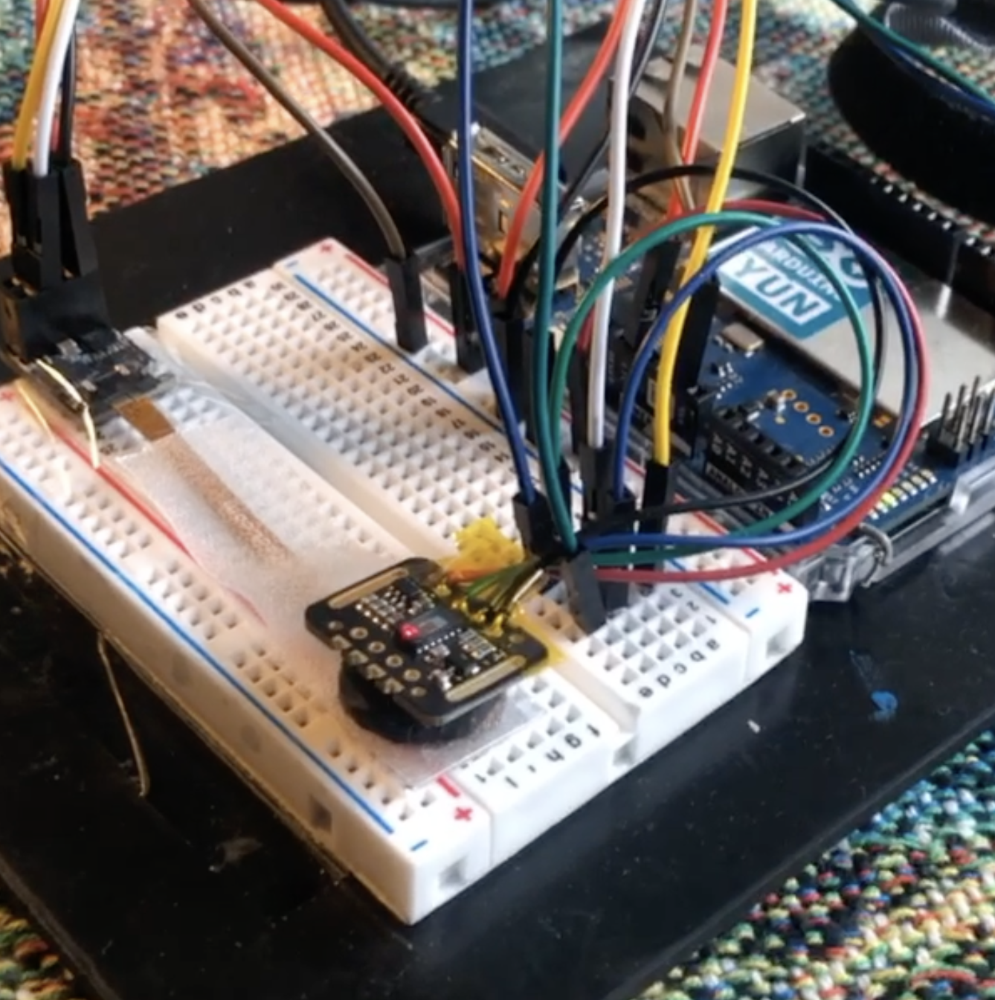
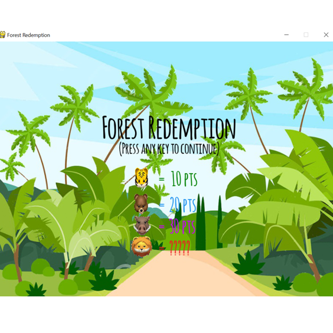

Jessica de Souza
|  |  |
 |
 |  |
 |
 |
 |
|---|
I joined the University of California San Diego as a graduate student in January of 2020, where I joined the Ubiquitous Data & Computing Laboratory advised by Professor Edward Wang. At UCSD, my research focuses on solving problems in healthcare and enabling affordable and convenient personal health monitoring for patients with specific needs. More specifically, I am exploring new ways of measuring blood pressure using smartphones in adults that need an easy self-assessment of their heart conditions. Also, I am exploring a new project related to maternal and neonatal care to better understand and improve the breastfeeding experience for newborns using sound analysis and smart devices.
My research interests involve ubiquitous computing and human-computer interaction for healthcare and how we can build accessible devices for people in need, especially for chronic illnesses. I am also interested in novel methods to get reliable biological data, either by using sensors, smartphones, or other devices. Henceforth, I believe the best contribution I can make as a Ph.D. student is to help achieve the Sustainable Development Goals for the health and well-being of the communities in need.
My technical background includes human-computer interaction, ubiquitous computing, sensing techniques, hardware development, embedded systems, cognitive science, data analysis, and signal processing.
Projects
Blood Pressure Estimation Using Finger Oscillometry

This work aimed to develop a low-cost finger-based Blood Pressure (BP) assessment tool for adults, based on an apparatus with a heart rate (PPG) sensor associated with a force sensor for measure the finger. Our premise is that the association of heart rate and force, both gathered from the finger, will provide enough information for accurate BP measurement. Currently, available blood pressure cuff devices are precise but still inaccessible by a majority of people in developing countries, and they can be inconvenient for carrying around for specific measurements. In this study, we verified the accuracy of our solution from parametric fitting and machine learning, which showed optimistic results when compared to a regular cuff-based device.
W-air Glasses

The W-air glasses was the first exploratory project as a Ph.D. student. The goal of W-air was an easy way to monitor breathing in a non-invasive way, allowing it to be used while performing regular activities such as sitting, walking, biking, and even during more motion of the user. It consisted of a pair of glasses attached to a thermal camera that would directly see the nose and mouth activity of the user while breathing. We are still exploring what this device can measure, and we are adding computer vision algorithm for improving the nostril detection, but preliminary results showed an accuracy of 97% for calculating the breathing rate on stationary activities.
EMG Flexible Electrode Fabrication + Application Game Using Python
The objective of this work is to develop an interactive game that uses electromyography (EMG) signals as input controls. The data acquisition system used is the RHD 32-Channel Recording Headstages from Intan Technologies, which reads and amplifies electrophysiological signals. The EMG sensor used was a custom-built porous graphene electrode in which we designed using Autocad and fabricated using a laser cutter machine. We performed the EMG readings for a real-time application in which allows the user to control a game that contains commands for moving left, right, and action buttons. The action commands are done by the user's forearm muscle contractions, which are detected by the DAQ system in real-time, and it's interfacing with a Matlab software package. The EMG data is filtered and written to a file as a buffer, which is used by the game as the input. The game is implemented using a Python application, that constantly takes the EMG data as the control input. This project was developed in the Medical Devices and Interfaces Class, if you want to check on the demo, please click here [project demo] to know more.
Skin Temperature Stimulation in Photoplethysmograph Devices


During my research internship at Microsoft Research, I was given the challenge of increase the signal quality of a wearable pulse optical sensor (PPG), which had low quality and resolution for darker skin tones. To solve that, we built a prototype of a temperature-controlled system that increases the local blood perfusion by applying heat to the skin surface. Our results found considerable PPG signal improvement for all six skin tones on the Fitzpatrick scale. This application also showed to have a lingering effect on the skin, where the PPG signal maintains improved resolution for longer periods of time after thermal stimulation. The innovation technique applied was filled as a patent under the following registration number: US11020014B2. Click here to know more.
Face Detection
The Face Detection project was performed during the multimedia systems class at IFSC. We used a monitoring camera to gather live images and used the Open CV library to detect human faces and censor them. The idea of this work was to deal with live image processing and try to reduce the delay in receiving the processed data. Click here [code and report in Portuguese] to know more.
Ecoshower

The Ecoshower project started with the idea of measuring the consumption of water and energy of showers. In Brazil, we are facing each day cases where we have to save water due to the water crisis. Therefore, we thought of a product that could easily inform us of the consume of these variables, with the option of showing the utility cost of the shower and making it possible to identify the user in cases of shared houses. Click here [document in Portuguese] to know more. With this project, I was awarded with my team with the second place of the IFSC Innovative Ideas contest, where my team earned 10,000 BRL to execute the first prototype. We also filled a patent in Brazil (2019) together with IFSC.
Antenna Design


The antenna design project was performed during my Antenna and Propagation class at IFSC. Students had the opportunity of picking one VHF antenna from the ARSATC community, where at the end of the implementation we would have the opportunity of communicating with amateur radios and sattelites on the same working frequency. Due to material implementation and different simulation results, we had to customize our antenna different from the ARSATC Moxon-Yagi Dual Band VHF/UHF antenna, in order to maximize que signal quality for transmiting and receiving the signal. We got very positive results on the SWR and the Isotropic Gain for both of the frequencies we were working on. Also, the practical radiation path of the antenna was very close to the projected one, prooving the success of the experiment. Click here to know more.
{kind=link}
Tele Jr
The Tele Jr is a junior entreprise initiative created by the students who aim to have corporative experiences while they are still in college. But more than that, we do not perform internships while participating on Tele Jr, we have real jobs and learn about management roles in different sectors of the corporation: human resources, business, marketing and projects. My role was to be an maketing and communications advisor, who worked on the corporation's image, as well as organizing events and meeting to make our corporation known and to inspire and encourage students in the STEM fields to become entrepeneurs and to find themselves in the field they were studying. We also performed visits in other private corporations in order to find partnerships and bring projects to Tele Jr. Click here to know more.
Teaching Robotics


I had the great pleasure of participating on a project to atract middle and high school students to the STEM fields by teaching robotics to them. The project was separated into two parts: The galena radio project and the robotics project. Using the galena radio, we could teach basic physics concepts by building and understanding the components of the galena radio, that is a passive radio built with basically one diode, on carbon microphone and a couple of thin copper wire. With the robotics project, we used the Arduino platform to build circuits and use basic embedded system coding to turn on LEDs, buzzers, create songs by varying the frequency of the components and cause a lot of fun with the students. Click here [article in Portuguese] to know more.